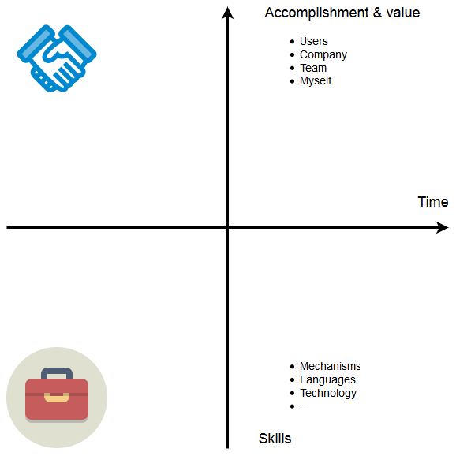
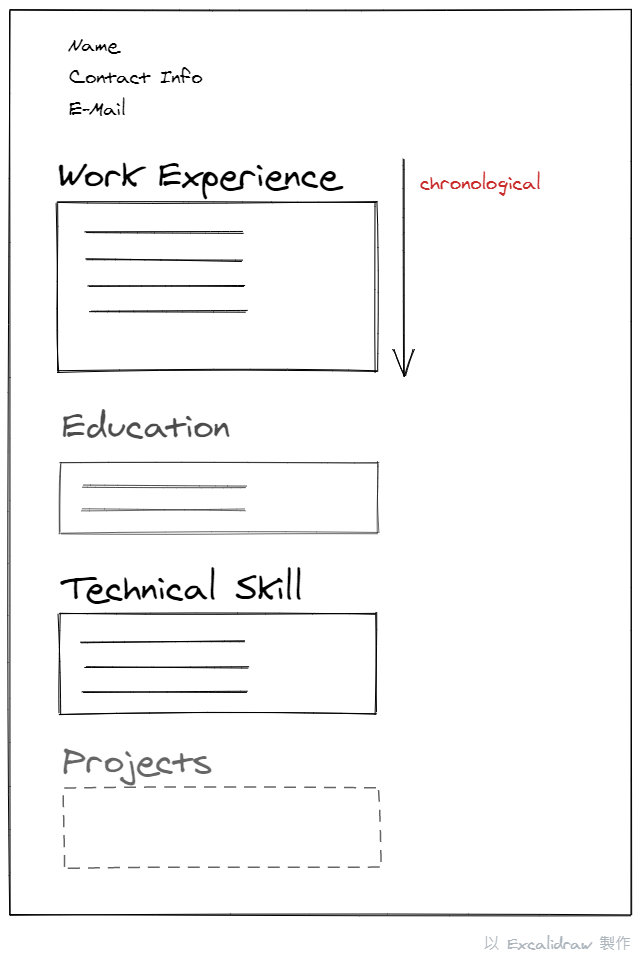

第一章: 神燈精靈的三個問題
從期望, 偏好的工作型態和可能擅長的角度給出一些參考項目, 幫助自己反思
- What Do You Need?
- How Do You Enjoy Working?
- What Are You Good At?
第一個問題(What Do You Need)給出的項目例如: 辣個錢錢(Money), 工作和生活平衡(Work/Life balance), 知名度(Recognition and respect)…
我覺得蠻難的XD
第二個問題(How Do You Enjoy Working)給出的項目例如:
- 團隊合作與獨立作業 (Teamwork vs. Independent work
- 創造與維護 (Creating vs. Maintaining)
- 帶頭衝的規劃者與參與計畫的執行者 (Leading vs. Joining)
基本上列出的這些都是每天工作上都會碰到的情境, 所以重點會放在自己偏好那一項的百分比, 試著和”enjoy”對齊
第三個問題(What Are You Good At)
- 數字相關 (Numbers)
- 寫作與溝通 (Writing and communication)
- 創造 (Creativity)
- 社交技巧 (People skills)
可以從硬技能和軟技能出發來思考
以軟體開發的角度來說, 硬技巧類似需求分析, 設計與開發, 測試, 部屬和維運, 軟技巧類似跨部門溝通, 協調, 時程規劃
第四章: 好棒棒履歷的六個魔法石(Six Hallmarks of a Powerful Resume)
- 成就導向 (Accomplishment Oriented)
- 可量化結果 (Quantifiable Results)
- 與職缺需求的一致性 (Well Targeted)
- 講人話 (Universally Meaningful)
- 講重點 (Clean, Professional, Concise)
- 好讀版 (Well Structured and Clear)
最重要的就是第1點和第2點
成就導向 (Accomplishment Oriented)
你幹了什麼好事且這件事為使用者, 公司, 所在團隊和個人帶來什麼效益
另一個角度是(Responsibility Oriented), 純粹描述你幹了什麼好事, 並沒有和效益做連結
原文舉例如下:
Highlight what you did, not what you were supposed to do.
Responsibility oriented: “Analyzed new markets and explored potential entrance strategies for China division.”
Accomplishment oriented: “Led entrance strategy for Foobar product in China, and successfully persuaded CEO to refocus division on the enterprise market, resulting in a 7 percent increase in profits”

可量化結果 (Quantifiable Results)
和SMART原則一樣, 要有可量測且可量化結果的說明, 讓別人能夠驗證並評估
意思就是不能單純說: 我好棒棒, 要能夠說出你為什麼好棒棒的原因
Original: “Implemented crash reporter and used results to fix three biggest causes of crashes.”
Newly quantified: “Implemented crash reporter and used results to fix three biggest causes of crashes, leading to a 45 percent reduction in customer support calls.”
與職缺需求的一致性 (Well Targeted)
resume資訊和該職缺的需求一致性, 目的是盡量對齊求職方和職缺的相關性, 節省大家的時間
講人話 (Universally Meaningful)
概念和詞彙不要用任職公司內的專有名詞, 目的是讓人聽得懂你在幹麻
講重點 (Clean, Professional, Concise)
Conciseness: people hate reading, Avoid large blocks of text on your resume; a collection of bullets of around one to two lines.
好讀版 (Well Structured and Clear)
依照時間順序, 由最新到最舊
有以下幾種主要資訊
- 經歷 (Employment or Work Experience):
- 職稱(job title), 公司名稱(company name), 公司位置(firm location), 任職時間(dates of employment)
- 最近的一份經歷需要4-5個描述(bullets), 每個描述大約1-2行
- focus on your accomplishments, not your responsibilities, and should be backed up with numbers whenever possible.
- 學歷 (Education)
- 學校名稱(university name), 在學時間(dates attended), 學校位置(location)
- this section should get shorter with more work experience.
- 新鮮人使用的主要資訊
- 目標 (Objective): 僅供轉換職務角色使用
- 摘要 (Summary): 關鍵成果的摘要
- 技能 (Technical Skills)
- 專案 (Projects)
